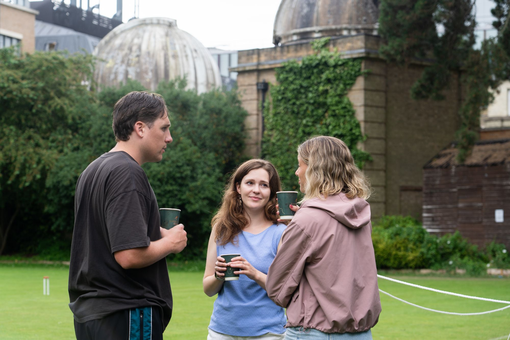

| 2025-2026 | 2026-2027 | ||||||||
| President: | Charlie Sharpe | SEH | Teo D'Agostino | Linacre | |||||
| Secretary: | Adrian Fernandes | New | Charlie Sharpe | SEH | |||||
| Treasurer: | Greg Simond | Linacre | Greg Simond | Linacre | |||||
| Welfare: | |||||||||
| Cuppers Director: | Teo D'Agostino | Linacre | |||||||
| Senior Member: | Dr Budimir Rosic | St Anne's | |||||||
| Co-opted posts: | |||||||||
| Captain: | |||||||||
| IT Officer: |
Please do not hesitate to contact any member of the Committee with any questions you may have. Alternatively, you can contact the Club via email at croquet.club@studentclubs.ox.ac.uk.